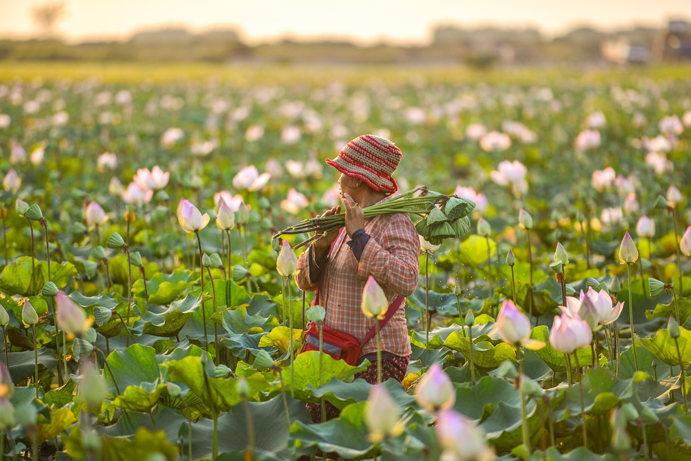

Organic Farming, Sustainable Agriculture
Organic farming is an eco-friendly approach to agriculture that avoids synthetic chemicals, promotes biodiversity, and enhances soil fertility. This method relies on natural fertilizers, composting, and biological pest control to maintain healthy crops while protecting the environment. By eliminating chemical pesticides and artificial fertilizers, organic farming prevents soil degradation and reduces water contamination. It also promotes healthier ecosystems by encouraging beneficial insects, birds, and microorganisms that contribute to natural pest control.
Organic farming offers numerous benefits, primarily by prioritizing ecological balance and human health. It avoids synthetic pesticides, herbicides, and fertilizers, reducing chemical exposure for farmers and consumers. Organic practices enhance soil health through composting and crop rotation, leading to improved water retention and reduced erosion. This healthier soil also sequesters more carbon, mitigating climate change. While yields may sometimes be slightly lower, the nutritional value of organic produce can be higher. Furthermore, organic farming promotes biodiversity by creating habitats for beneficial insects and wildlife. It also supports local economies and offers a more sustainable approach to food production.